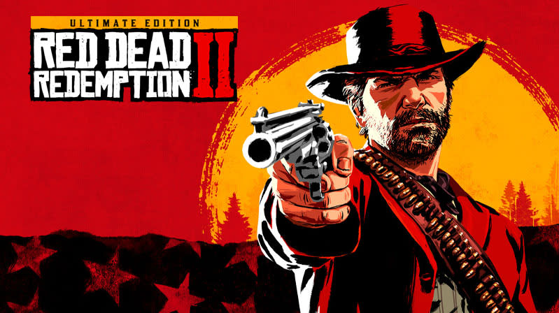
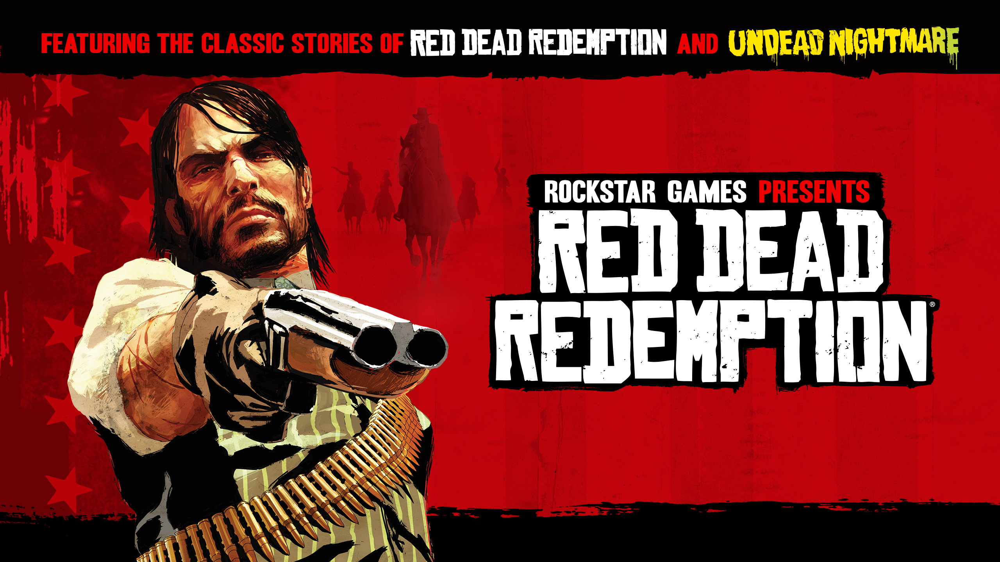

Red Dead Redemption – Onde a Liberdade Encontra o Fim da Linha
Se existe um jogo que prova que videogames podem ser verdadeiras obras de arte narrativas, esse jogo é Red Dead Redemption. Desenvolvido pela Rockstar Games, a série é um marco na história dos games — não apenas por seu mundo aberto impressionante, mas pela forma como constrói personagens, emoções e dilemas morais em meio à decadência do Velho Oeste.
Red Dead Redemption 2 – A Jornada de Arthur Morgan
Lançado em 2018, Red Dead Redemption 2 é uma prequela do primeiro jogo e coloca o jogador na pele de Arthur Morgan, um fora-da-lei dividido entre lealdade à sua gangue e sua própria consciência. Ambientado em 1899, o jogo mostra um mundo em transição — o Velho Oeste está morrendo, e com ele, um estilo de vida inteiro.
O que torna RDR2 especial é a sua trama emocionalmente carregada, repleta de personagens complexos e momentos de pura contemplação. É um jogo sobre liberdade, perda, redenção e a inevitabilidade da mudança. Arthur não é apenas um personagem — ele é um espelho do jogador, e suas escolhas moldam seu legado.
Link para download:Red Dead Redemption 2
Red Dead Redemption – A Luta de John Marston
Lançado em 2010, o primeiro Red Dead Redemption acompanha John Marston, um ex-bandido forçado pelo governo a caçar os antigos membros de sua gangue para proteger sua família. Ambientado em 1911, ele mostra um Oeste ainda mais perto do fim, onde a civilização avança e a violência perde espaço para a burocracia e o controle.
Com uma história intensa, um mundo vasto e um dos finais mais memoráveis da história dos videogames, o jogo elevou o padrão para narrativas em mundo aberto.
Link para download:Red Dead Redemption
Por que Red Dead é referência em narrativa?
- Personagens vivos e memoráveis, como Arthur, John, Dutch, Sadie e muitos outros.
- Um roteiro impecável, que mistura ação, drama, política, existencialismo e até poesia.
- Ambientes que contam histórias sozinhos, desde as planícies silenciosas até as cidades em crescimento.
- Trilha sonora poderosa, que sabe quando calar e quando emocionar.
- Missões secundárias que ampliam a experiência, em vez de apenas preencher o tempo.
Red Dead é mais do que um jogo. É uma reflexão.
A série trata de redenção, honra, fracasso, sacrifício, lealdade e do peso das escolhas. Você pode explorar, atirar, caçar e cavalgar — mas, no fim, vai lembrar mesmo é das conversas à beira da fogueira, das decisões difíceis e de como cada jornada termina.
Red Dead Redemption é mais do que uma homenagem ao Velho Oeste. É um retrato da condição humana, contada com tiros, poeira e coração.